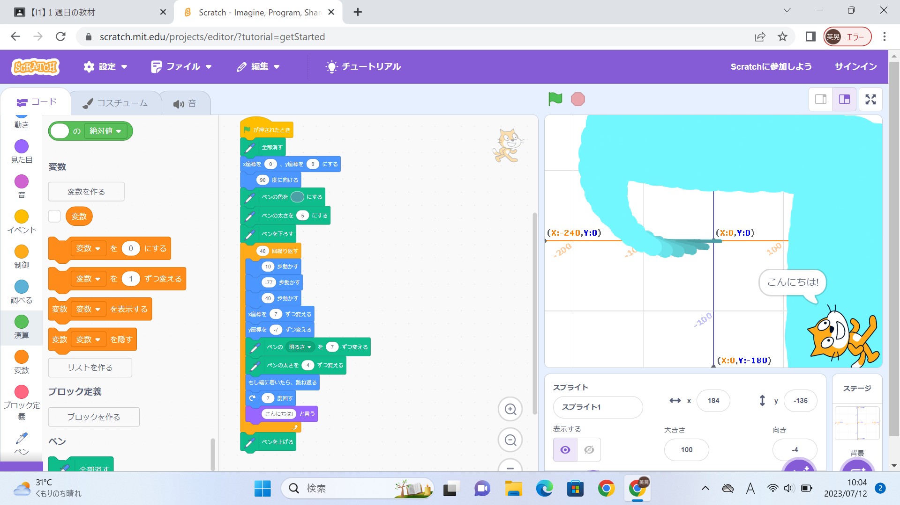

1週目のレポート ： 公大高専１年実習I-1
1a班09番 コアラのマーチ
第1週目
1-1 サイエンスアート

1.内容
サイエンスアートは、最初だけ行う動作と繰り返し行う動作の二つのプログラムを組み合わせている。まず最初だけ行う動作のプログラムは、旗が押されたらペンを全部消して、定位置に戻り、ペンを下すよう流れになっている。次に々行う動作のプログラムは、前後に動かし座標をずらしていき、ペンの太さや色も変わるようになっている。さらに、もし端にっ着いたら跳ね返ったり、向きを変えて「こんにちは！」と言うようになっている。これらの流れを４０回繰り返して最後にペンを挙げて終わるようになっている。
2.感想
自分が思い描くようにプログラムを組み立てて、プログラム通りに動かすことの難しさを体感しました。プログラムの順番を変更したり適当に組み合わせるだけでも新しい動きが起こり、新しいアイデアが浮かんでくることも実感しました。
1-2 ゲーム
1.内容
猫の最初の位置と回転方法を左右のみに設定した。猫を動かすために右向き矢印が押されたら90度方向を向き10歩進み、左向き矢印が押されたら-90度方向を向き10歩進むようにした。上からキャラクターが乱数でいろんな速度の速さでいろんな場所から落ち来るようにプログラムした。そして、猫が落ちてくるものに触れると10点手に入れるようにもプログラムした。
2.感想
先生が説明していたことをそのまま行っただけですが、こういうプログラムにすることでこうなってこう動くようになっているということが理解できました。ゲーム作成は楽しいと感じました。
1-3 ホームページ作成
私のホームページ
1.内容
githubにアカウントを作成し、ホームページを自己紹介に改善した。
2.感想
初めてホームページの作り方を知りました。情報発信のために一生懸命作ってくれている人がいることも実感しました。私は、ホームページ作成が面白いと感じました。今回は先生がほとんど作成してくださっていたけど、ホームページ一人で作れるようになりたいと思いました。